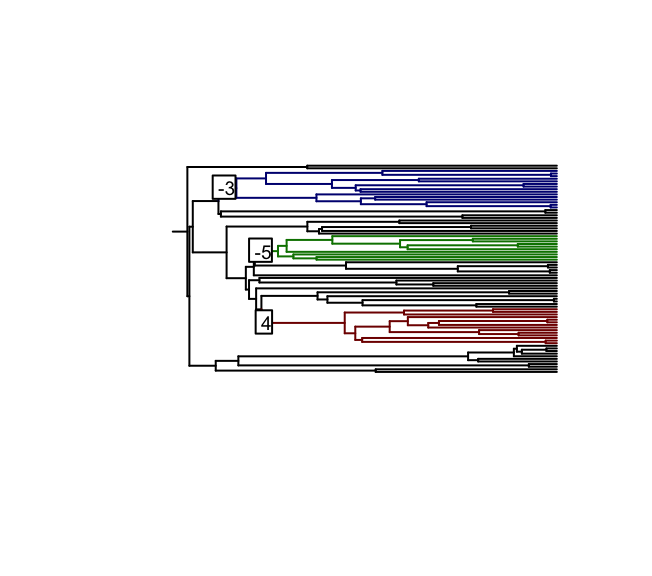
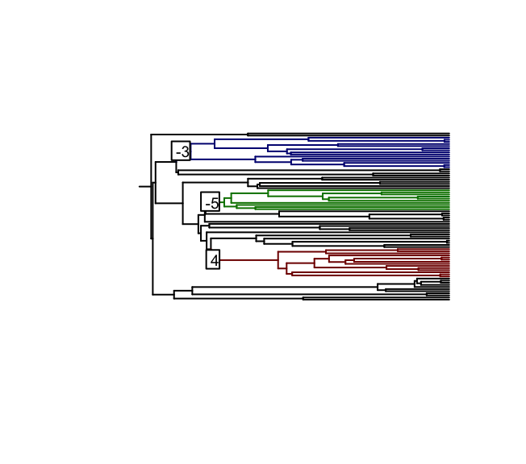
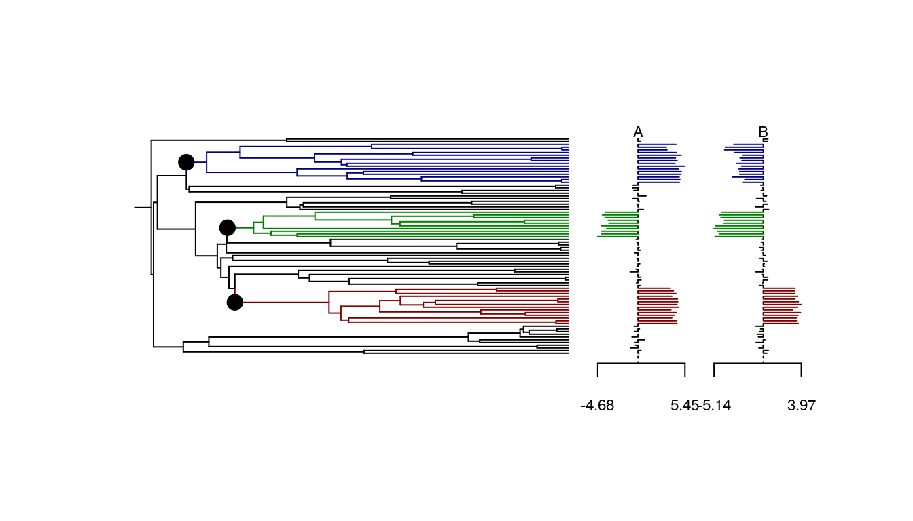
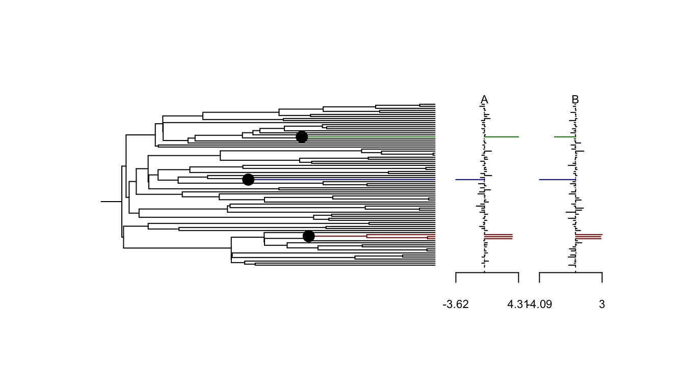
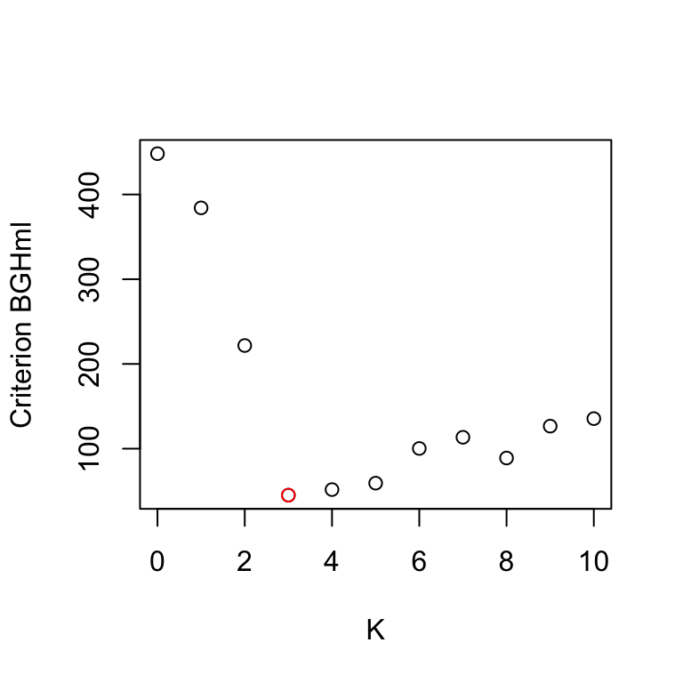
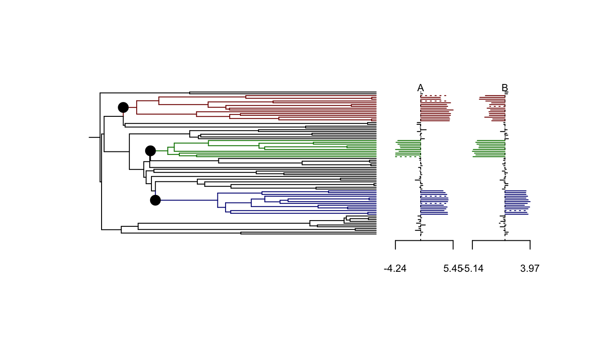
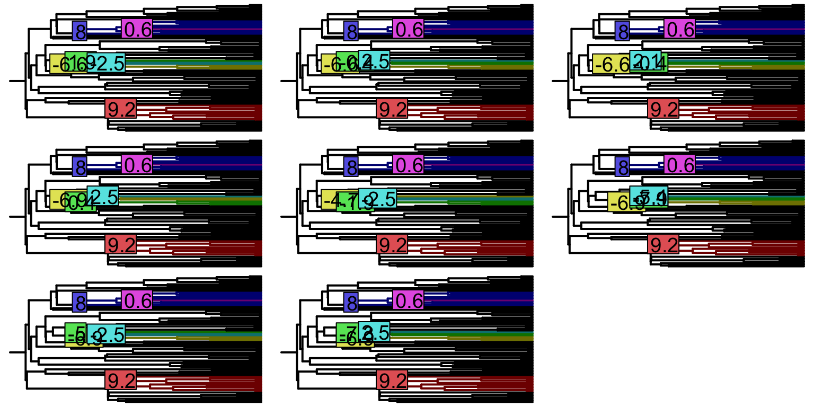

An Introduction to the PhylogeneticEM Package
Paul Bastide
2018-09-11
Source:vignettes/tutorial.Rmd
tutorial.RmdIntroduction
The PhylogeneticEM package is designed to automatically detect shifts in quantitative traits.
Simply load the package with:
library(PhylogeneticEM)Simulation of a dataset
To show how the functions work, let’s first simulate some traits with known parameters.
We use function sim.bd.taxa.age from package TreeSim to simulate a phylogenetic tree.
set.seed(17920902)
ntaxa = 80
tree <- TreeSim::sim.bd.taxa.age(n = ntaxa, numbsim = 1, lambda = 0.1, mu = 0,
age = 1, mrca = TRUE)[[1]]We then choose a set of parameters, using function params_process:
params <- params_process("OU", ## Process
p = 2, ## Dimension
variance = diag(0.5, 2, 2) + 0.5, ## Rate matrix
selection.strength = 3, ## Selection Strength
random = TRUE, ## Root is random
stationary.root = TRUE, ## Root is stationary
edges = c(29, 89, 127), ## Positions of the shifts
values = cbind(c(5, 4), ## Values of the shifts
c(-4, -5),
c(5, -3)))Note that here, we took the selection strength to a scalar matrix, but we could specify a full matrix. Also, we did not specified the ancestral values of the optimum states: these are took to be \(0\) by default.
The position of the shifts is specified through to the number of the edge where it occurs. These can be saw using a standard plot from package ape. Once the parameters are constructed, we can check the position of the shifts by plotting them:
plot(params, phylo = tree, traits = 1, value_in_box = TRUE, shifts_bg = "white")
plot(params, phylo = tree, traits = 2, value_in_box = TRUE, shifts_bg = "white") 

We can then simulate a process along the tree with these parameters:
sim <- simul_process(params, tree)We can then extract a matrix of simulated data from this object:
data <- extract(sim, ## The simul_process object
what = "states", ## We want the actual values
where = "tips") ## Only at the tips of the treeThe column names of the matrix are set to the tip labels of the tree. By default, the row names are left blank, but, for the sake of the demonstration, let’s assume that the two traits are named “A” and “B”:
rownames(data) <- c("A", "B")Finally, we can plot the simulated process on the tree to see what it looks like:
plot(params, phylo = tree, data = data)
Inference
In this section, we take the traits as simulated by function simul_process, and use function PhyloEM for the inference of the parameters.
To make things more interesting, let’s assume that we have some missing data:
nMiss <- floor(ntaxa * 2 * 0.1) ## 10% of missing data
miss <- sample(1:(2 * ntaxa), nMiss, replace = FALSE) ## sample missing randomly
chars <- (miss - 1) %% 2 + 1 ## Trace back rows and columns
tips <- (miss - 1) %/% 2 + 1
for (i in 1:nMiss){
data[chars[i], tips[i]] <- NA ## Forget some values
}By default, the inference is done on an automatically computed grid of alpha values. Here, to keep the computations to a minimum, we will only use \(2\) values for alpha, including the true value. In a true application however, a grid with \(10\) values of \(\alpha\) is automatically chosen.
## Grid on alpha
alpha_grid <- c(1, 3)
## Run algorithm
res <- PhyloEM(phylo = tree,
Y_data = data,
process = "scOU", ## scalar OU model
random.root = TRUE, ## Root is stationary (true model)
stationary.root = TRUE,
alpha = alpha_grid, ## On a grid of alpha
K_max = 10, ## Maximal number of shifts
parallel_alpha = TRUE, ## This can be set to TRUE for
Ncores = 2) ## parallel computations## There are some equivalent solutions to the set of shifts selected by the Djump_BM1 method.res## Result of the PhyloEM algorithm.
## Selected parameters by the default method:
## 2 dimensional scOU process with a random stationary root.
##
## Root expectations:
## [1] -0.01260485 -0.01637370
##
## Root variance:
## [,1] [,2]
## [1,] 0.1695455 0.122572
## [2,] 0.1225720 0.172665
##
## Process variance:
## [,1] [,2]
## [1,] 1.0172732 0.7354322
## [2,] 0.7354322 1.0359902
##
## Process selection strength:
## [,1] [,2]
## [1,] 3 0
## [2,] 0 3
##
## Process root optimal values:
## [1] -0.01260485 -0.01637370
##
## Shifts positions on branches: 127, 89, 29
## Shifts values:
## 127 89 29
## [1,] 4.911583 -4.315716 4.693763
## [2,] -2.865227 -5.089515 3.833946
##
##
##
## See help to see all plotting and handling functions.The fitted object contains the inferred parameters for every values of \(\alpha\) and \(K\), as well as the parameters selected by the various model selection criteria.
Here, we can see that the original shifts were recovered by the model selection procedure. We can plot the obtained solution, as shown below. The inferred states a the tips are shown in dotted lines. Notice that they are coherent with the positions of the shifts that we found.
plot(res)
The function above automatically plots the solution selected by the model selection criterion. We can plot this criterion, to see wether the solution selected is a clear minimum.
plot_criterion(res)
Here, the criterion behaves rather well, and the solution for \(K=3\) seems to be a good choice.
Above, we plotted the solution given by the LINselect method (the default). But we might want to see the solution given by another selection method, such as the slope heuristic. In that case, we just need to run:
plot(res, params = params_process(res, method.selection = "DDSE"))where we extracted the parameters with the method params_process. Here, the results are the same.
We can also extract the solution for a given number of shifts and/or a given value of alpha. For instance, we can see that in this simple case, the inferred position of the shifts is robust to the value of the selection strength:
plot(res, params = params_process(res, K = 3, alpha = 1))
The inferred shifts values however are quite different:
params_process(res, K = 3, alpha = 1)$shifts## $edges
## [1] 127 89 29
##
## $values
## [,1] [,2] [,3]
## [1,] 7.721542 -7.045950 7.789901
## [2,] -4.547188 -8.427789 6.278500
##
## $relativeTimes
## [1] 0 0 0params_process(res, K = 3, alpha = 3)$shifts## $edges
## [1] 127 89 29
##
## $values
## [,1] [,2] [,3]
## [1,] 4.911583 -4.315716 4.693763
## [2,] -2.865227 -5.089515 3.833946
##
## $relativeTimes
## [1] 0 0 0Equivalent Solutions
When there are too many shifts, the solution might not be identifiable. For instance here, if we take the (degenerate) solution with \(8\) shifts, we get this warning:
params_8 <- params_process(res, K = 8)## Warning in params_process.PhyloEM(res, K = 8): There are several equivalent
## solutions for this shift position.And we can plot all the equivalent shifts allocations:
plot(equivalent_shifts(tree, params_8))
the default only shows the shifts values for the first trait.